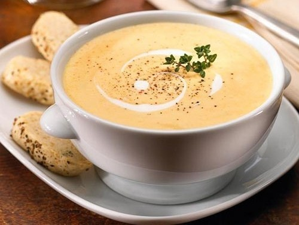

Сирний крем-суп

Почистіть цибулю від лушпиння, помийте та наріжте її дрібними кубиками. З моркви зніміть шкірку, розріжте навпіл та наріжте дрібними кубиками. Розігрійте сковорідку, налийте олії та пасеруйте цибулю з морквою до золотої скоринки. Вичавіть до овочевої засмажки часник та ретельно перемішайте.
Поставте готовий бульйон на вогонь, дайте йому закипіти. Помийте картоплю, зніміть з неї шкірку та поріжте середнім кубиком. В киплячий бульйон додайте картоплю, підсмажену моркву та цибульку. Перемішайте бульйон, накрийте кришкою та варіть 10 хвилин. Додайте спецій за смаком.
Натріть твердий сир і плавлений на грубій терці та додайте в бульйон. Ретельно перемішуйте суп ложкою до повного розчинення сиру. Додайте до супу нарізане куряче філе, проваріть суп ще 5-8 хвилин та перебийте все блендером до стану пюре. Крем-суп готовий, смачного!